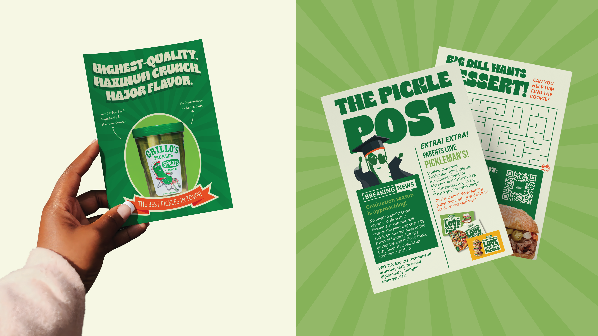
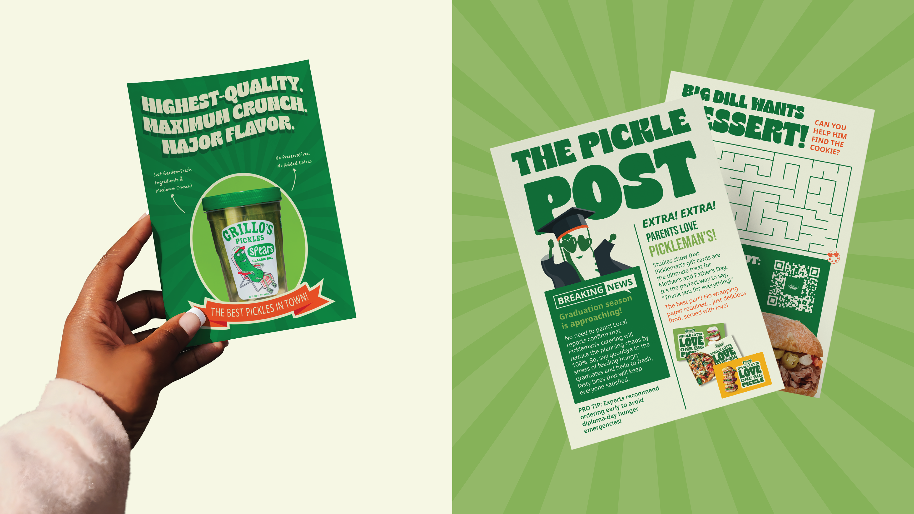

Pickleman’s Gourmet Café needed a refreshed identity that captured their bold flavors, commitment to quality, and growing presence in the fast-casual market. The rebrand focused on creating a vibrant, cohesive visual system that elevated everything from in-store experiences to digital touchpoints. Clean, energetic design paired with crave-worthy food photography and playful illustrations brought their menu and mission to life. The result is a dynamic brand that reflects Pickleman’s artisanal approach and positions them for expansion while staying true to their fresh, fast, and flavorful roots. Explore more at www.picklemans.com


 
